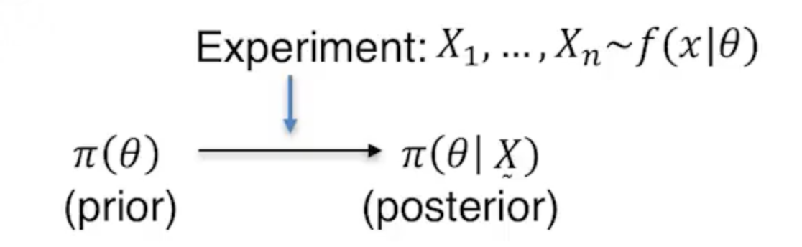
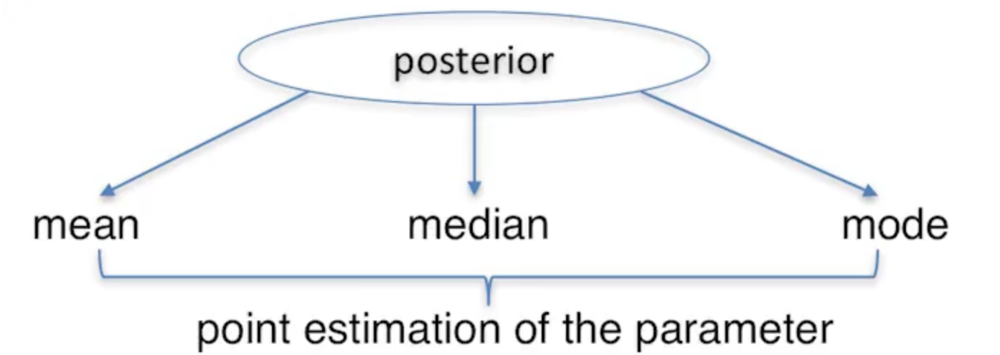

Bayesian Conjugate Families¶

Bayesians turn prior information and observed data into a posterior distribution. We do this using Bayes theorem.
The professor discusses estimation and testing.
estimation can be point estimates or estimating intervals.
I imagine testing is something like a hypothesis test.
Point estimates¶

Bayes’ estimators are functions of \(X_1,...,X_n\). When \(X_1,...,X_n\) are observed, Bayes estimators are called are called an action \(a\).
A posterior mean minimizes \(\mathbb{E}^{\theta|X}[(\theta - a)^2]\) with respect to \(a\).
A posterior median minimizes \(\mathbb{E}^{\theta|X}[|\theta - a|]\) with respect to \(a\).
Define \(L_C(\theta, a)\) as follows:
The posterior mode is an action that minimizes
with respect to \(a\).
Bayes risk¶
The most common Bayes estimator is the posterior mean. There is a frequentist rule that minimizes Bayes risk,
is the posterior mean \(\delta_B(X)\). If X is observed, that is, if \(\delta_B(X)\) is conditioned on \(X\), the result is Bayes action.
Bayes risk is
Posterior mean minimizes Bayes risk.